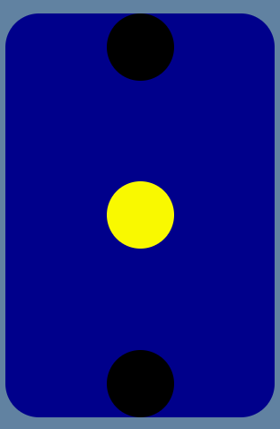
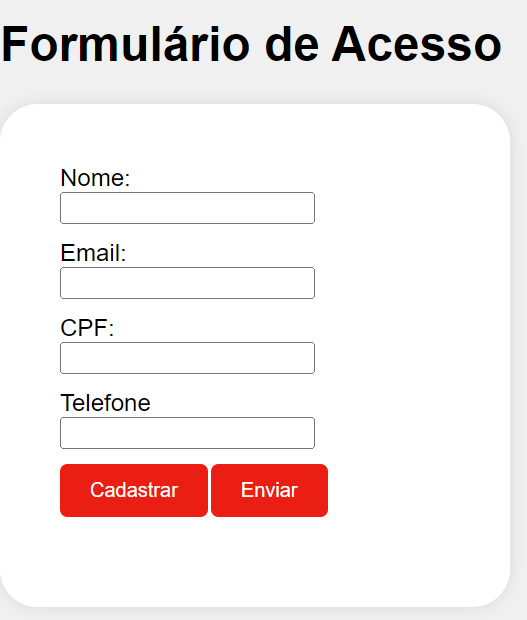
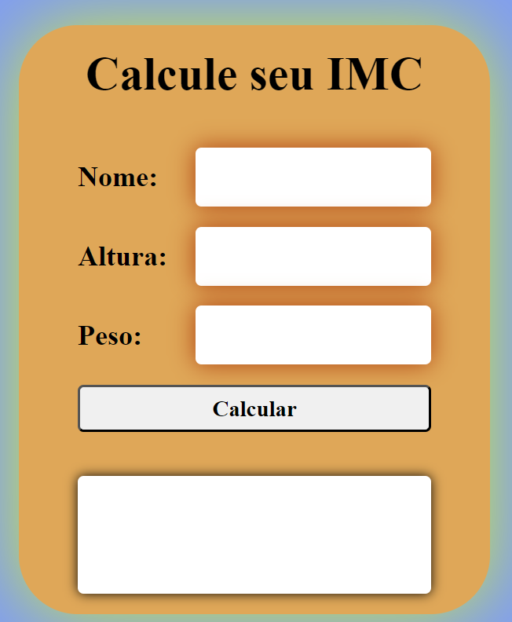

Olá, me chamo Talita e estou em transição de carreira para TI
Tecnologia da informação (TI), utiliza a computação para produzir, transmitir, armazenar, acessar e usar diversas informações. O mundo está cada vez mais tecnógico e é natural que esta implementação esteja cada vez mais incorpado no mercado de trabalho. Há um leque de possibilidade de trabalho em TI, mas é preciso ter capacitação para atender as demandas do mercado e não ficar para trás. E é pensando nisso que decidi compartilhar esta jornada com vocês.
Saiba MaisMinha caixinha de ferramentas
Descubra as habilidades e ferramentas que domino e que me permitem criar soluções criativas e funcionais para os meus clientes.
-

HTML
Com o HTML podemos criar vários elementos para construir uma página web com o tema da sua preferência: blogs, lojas virtuais.
Leia mais → -
CSS
O CSS permite que tenhamos vários estilos em uma página HTML, tornando as possibilidades de personalização quase infinitas.
Leia mais → -

Java Script
O Java Scritp é uma linguagem de programação que nos possibilita criar vários conteúdos de forma personalizada conforme demanda.
Leia mais →
Projetos em Destaque
De ideias simples a projetos de grande complexidade, aqui estão meus trabalhos mais recentes: De ideias simples a projetos de grande complexidade
-

Caixa Farol
-

Formulário
-
Menu
-

Cálculadora IMC